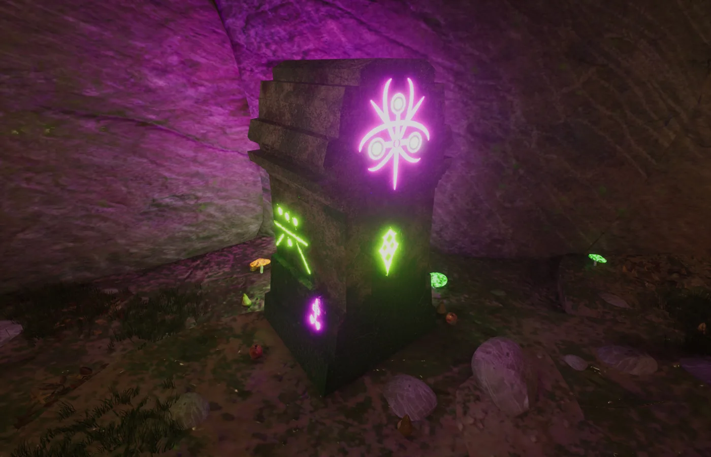
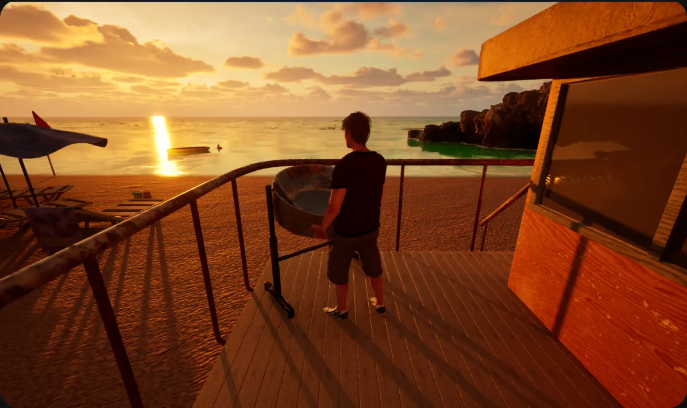
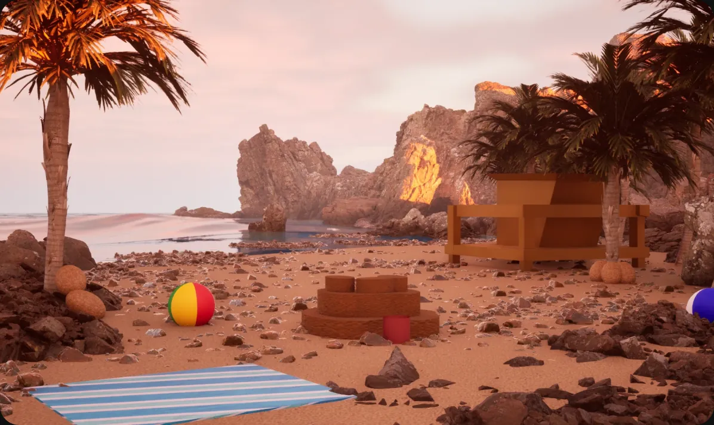

Trinidadian Beach Scene
Level Designer & 3D Artist
- Software:
- Unreal Engine 5.5 - Maya 2025 - Substance Painter
- Team Size:
- 1
A high-fidelity recreation of the coastlines of Trinidad and Tobago, this project served as a deep dive into balancing extreme visual fidelity with strict real-time performance budgets. By blending custom assets with industry-standard Unreal Engine plugins, I developed an atmospheric, motion-heavy environment that captures the vibrant energy of my home country.
Creative Pipeline
Modeling & Integration: Authored custom architectural structures and environmental props in Maya, ensuring seamless visual parity when blended with high-resolution Quixel Megascans.
Dynamic Fluid Systems: Leveraged the Unreal Water Plugin to architect a reactive ocean. Engineered the interaction between custom wave systems and floating actors, ensuring realistic buoyancy physics and accurate shoreline displacement.
Environmental Animation: Breathed life into the scene using World Position Offset (WPO). Authored custom wind logic for foliage and fabric assets, creating an immersive tropical breeze effect without the heavy overhead of skeletal simulations.
Atmospheric & Character Logic: Integrated the Ultra Dynamic Sky system to drive physically accurate, real-time lighting, and utilized Mixamo animations to ground the scene's scale and narrative context.
Design Challenges & Solutions
Challenge: Performance Optimization and Stability
Pushing the engine to its limits with high-resolution geometry and complex fluid simulations initially caused severe hardware stress and frequent engine crashes while attempting to match the exact look of a real-life Caribbean beach
Solution
I implemented strict performance budgeting to resolve massive instability, overcoming dozens of engine crashes during development. Through rigorous iterative profiling, I stabilized the scene into a portfolio-ready real-time render. Additionally, I refactored the heavy water material, optimizing the dynamic waves and foam while precisely color-matching the water to the real-life coastlines of home.

Challenge: From Postcard to Video
A static environment wasn't enough to capture the true atmosphere of a Caribbean coastline. The goal was to build a living, reactive world that felt authentic in motion, moving beyond a simple "postcard" render.
Solution
To achieve a cinematic, living feel, I prioritized secondary motion across the entire environment. By centralizing the buoyancy physics and layering WPO-driven wind systems across all foliage and fabric, I created a highly interactive shoreline. This vertex-level approach successfully "sold" the realism of the wind and water without incurring the heavy rendering costs associated with complex skeletal physics.

Reflections Stability and Aesthetics go Hand in Hand
This project taught me that "realism" is as much about stability as it is about aesthetics. Whether for interactive gameplay or virtual production, a beautiful scene is only successful if it is reliable. I walked away with a deep understanding of how to bridge the gap between "pushing the envelope" and maintaining a production-ready environment.
Reactive Environments
Integrated dynamic water systems and buoyancy physics to transform a static 3D landscape into a living, interactive ecosystem that responds to physical actors.
Performance Budgeting
Resolved severe engine instability by rigorously profiling and optimizing high-resolution geometry and fluid simulations to maintain a stable real-time render.
Vertex Optimization
Replaced expensive skeletal simulations with custom World Position Offset logic to achieve realistic environmental motion at a fraction of the rendering cost.